L-Pro Team
L-Pro TeamКатегории:
Ka-Radio - Web radio из проводов и палок за $10
Сегодня я расскажу наверное про самый дешевый способ собрать internet radio.
Спасибо за это французскому инженеру на пенсии karaWin и его проекту Ka-Radio. Нам понадобится NodeMCU или Wemos D1 Mini или Wemos LOLIN D1 в количестве одной штуки. Лучше брать с ESP12-S на борту, но и старая ревизия ESP12-F тоже пойдет. У меня была вот такая:
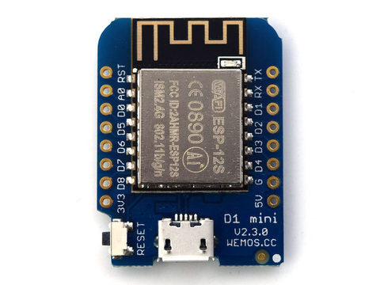
Wemos D1 Mini
Аппаратный кодек VS1053b. Советую брать на красной плате, цепь питания выполнена качественнее чем на синей. Обязательно проверьте кварц, должен быть на 12.288MHz, иначе звук будет немножко растянут. Обязательно заменить стабилизатор 2.5в на 1.8в . Китайцы перепутали VS1053b с VS1003 и влепили не тот. На форуме VLSI Solution пишут, что от такой напруги чип быстро деградирует.
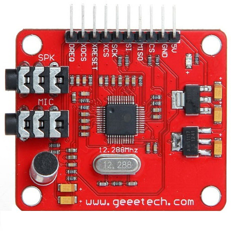
аппаратный кодек VS1053b
Берем провода и соединяем так:
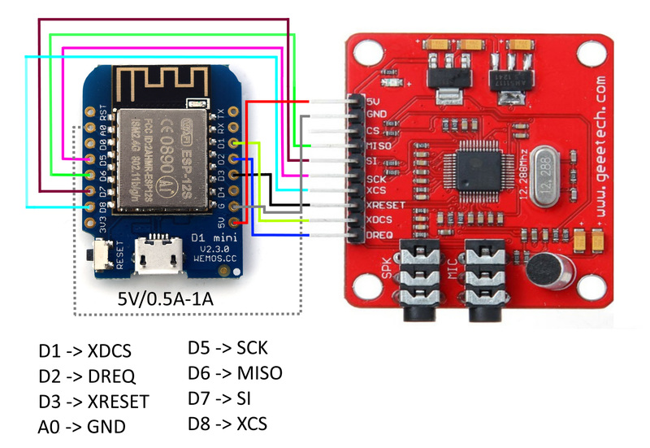
подключение ESP8266 и VS1053b по схеме Ka-Radio
К аналоговому входу A0 подключаются кнопки управления. Если их нет замыкаем контакт на землю, чтобы избежать фантомных нажатий.
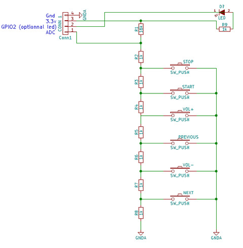
управление Ka-Radio без смартфона
Качаем Ka-Radio и Espressif Flash Download Tools. Скомпилированный проект находится в папке ESP8266-Firmware/bin/. Заходим в диспетчер устройств windows и посмотрим какой порт винда назначила вашему USB-COM адаптеру. Мне выдала COM4. Меняем скорость с 9600 на 115200. После этого идём в Flash Download Tools и выбираем свой порт, указываем путь и адреса для *.bin файлов. Пустое поле в DETECTED INFO - это норма. Информация в нем появится во время загрузки кода в ESP8266 - вот такой китайский логика. По умолчанию скорость работы внутренней флешки 40MHz. Можно попробовать увеличить до 80MHz - Ka-Radio будет шустрее. Делать осторожно - некоторые китайские serial flash не работают на таких скоростях. Прошиваем ESP8266 согласно картинке:
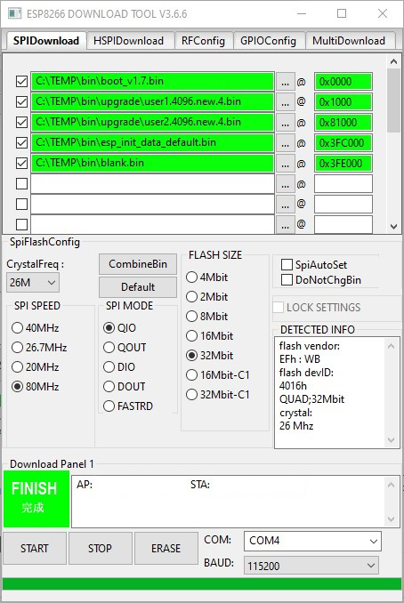
настройка Espressif Flash Download Tools для Ka-Radio
Все. Передергиваем питание, подключаемся к открытой точке доступа "WifiKaRadio". Открываем браузер с адресом 192.168.4.1. На странице Settings вводим имя роутера и пароль. Ставим галку напротив "Use DHCP". Если подключение к роутеру прошло успешно "WifiKaRadio" исчезнет. Идем в админку роутера и смотрим IP нашего web radio. Интерфейс очень задумчив - успел заварить и выпить чаю.
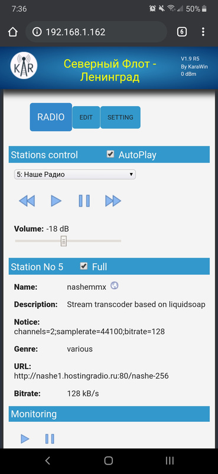
интерфейс Ka-Radio
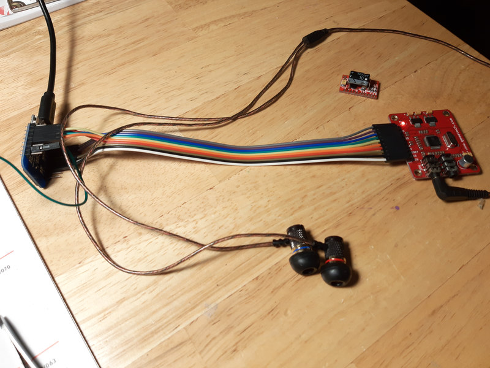
Ka-Radio proof of concept
С подключением VS1053b к усилителю есть нюанс. Напрямую нельзя, можно спалить выходной каскад. Кодек использует виртуальную землю GBUF для выхода на наушники. Надо поставить разделительные конденсаторы С1, С68 на 10мкФ х 10в и подпаяться к GND вместо GBUF. Элементы R8, C5, R7, C4, R6, C3 уже есть на красной плате, а R1, R79, C2, C69, R2 и R80 можно не устанавливать.
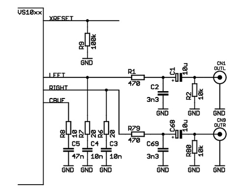
схема подключения VS1053b к усилителю
Отличным вариантом оконечного усилителя для дешманского радио является D-class стерео усилитель PAM8403. Две красных можно взять за 99 центов. Выходная мощность 3W x 3W на 4Ом с искажениями THD 10% и КПД 90%. Напряжение питания 2.5в - 5.5в
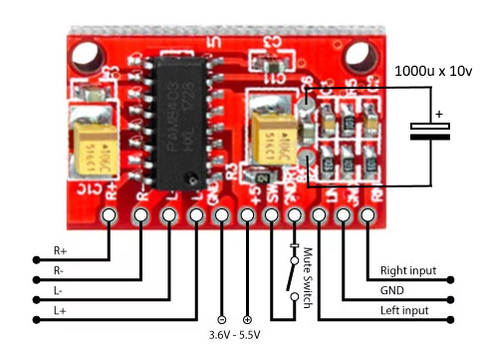
самая лучшая плата PAM8403
Чтобы усилитель не фонил в эфир, на частоте 1MHz и выше, надо допаять 1000мкФ х 10в. Желательно добавить ферритовые бусины и 220пФ на все четыре провода к динамикам.
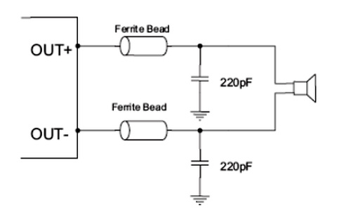
выходной фильтр PAM8403 для подавления ВЧ помех
Еще одна неприятная особенность Ka-Radio - цифровые помехи и шумы в паузах. При проигрывании станций их не слышно - они маскируются полезным сигналом. Лечится соединением виртуальной земли GBUF кодека VS1053b с VREF PAM8403 через конденсатор C3 в 47мФ х 10в.
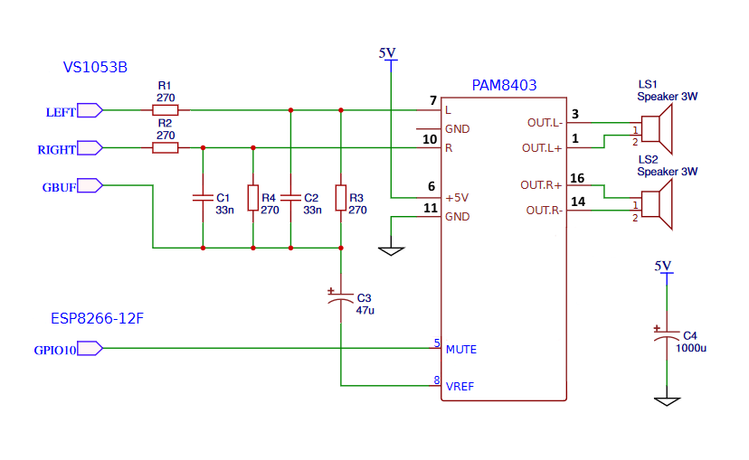
конденсатор C3 для подавление цифровых помех и шумов в паузах
Второй способ победить помехи - использовать усилитель с дифференциальным входом. Один из дифов подключается к земле и все синфазные помехи вычитаются входным каскадом. Типичный представитель на Aliexpress - HT6872. Выходная мощность 2.8W на 4Ом с искажениями THD 10% и КПД 90%. Напряжение питания 3.6в - 6.5в. У усилителя есть встроенный фильтр EMI - не нужны ферритовые бусины и конденсаторы на выходе. По звуку он мне понравился больше чем PAM8403 - высоких богаче и они почище. Так же как и PAM8403 легко работает от плохого блока питания или дохлых батарей.
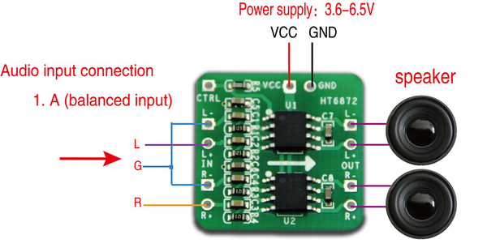
подключение HT6872
Еще один усилитель AB-class с дифференциальным входом и вольтодобавкой — HT8698. Выходная мощность 4.75W x 4.75W на 4Ом с искажениями THD 10%. Напряжение питания 2.5в — 5.5в. Звук сказка. Есть басы, высокие не каша. Монстры Bose и Harman-Kardon нервно курят. Но есть одно но — очень требователен к питанию. От старой самсунговской зарядки Ka-Radio с ним не завелся. На средней громкости в пиках 1.5А, на максимальной около 2А.
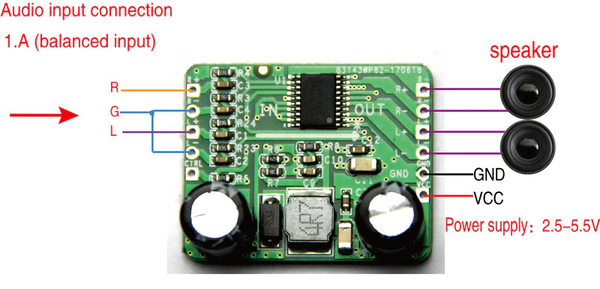
подключение HT8698
Третий способ - развязать земли. Например использовать усилитель с отдельным блоком питания.
В общем я собрал на коленке за полчаса и оно неплохо играет. Получилось в 4-5 раз дешевле чем Orange Pi Zero с LMS.
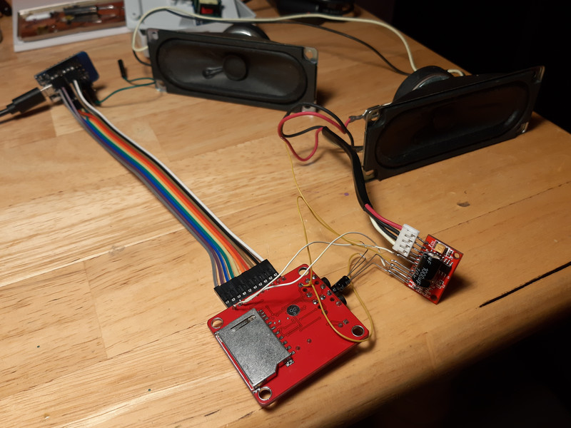
web radio из проводов и палок
Отличная балалайка для гаража или дачи с доступом к интернету.
UDP: Получил новую "красную" плату VS1053b - качество жесть. Пока не пропаял все детали и чип, радио спотыкалось, шумело или не играло совсем.
Если AutoPlay работает через раз после включения - радио не хватает ампер. Замените блок питания.
Если в Settings убрать галочку с DHCP, web морда становится чуть-чуть быстрее.
Если список радиостанций не обновился или пропал, нажмите Refresh locale list.
UDP: Для эстетов есть двухсторонняя плата от dsaltas.
UDP: О Ka-Radio32 на ESP32 читаем тут.
#diy#esp8266#ka-radiodiyesp8266
62401000000
Опрос от партнеров
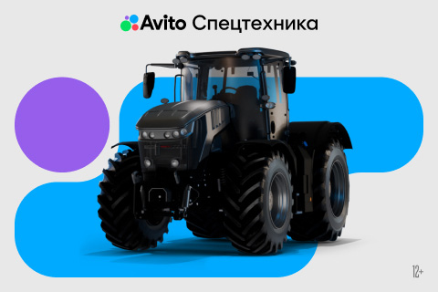
Предложения от надёжных продавцов
Ещё записи по тегу
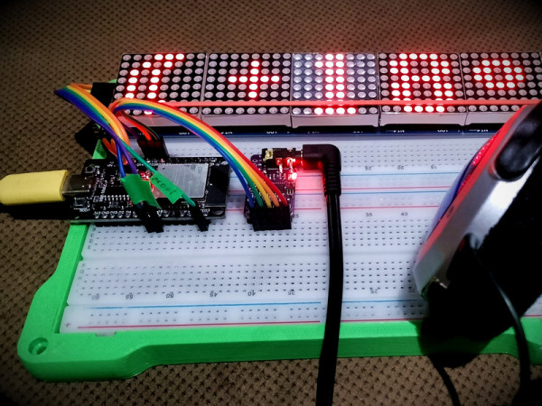
MatrixClock part 7 - прикручиваем webradio (теперь точно)
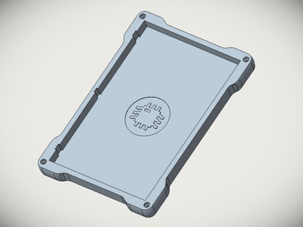
Arduino ESP8266, текущая git версия одним кликом
L-Pro TeamСпасибо огромное Друг elchupanibrei
Всё в порядке, просто морда — тормоз)
Второй вариант у меня не работает (
Перепрошивал раза три и не то чтобы настройки слетели
даже залитые радиостанции на месте остались %)
Отсюда вопрос: как сбросить настройки ?!?
Спасибо.
L-Pro TeamПривет, друг
После этого::: "Если в Settings убрать галочку с DHCP, web морда становится чуть-чуть быстрее." — не могу войти в веб морду, помоги пжл.
Спасибо)
Привет Друг. Советую вам почитать что такое DHCP. Зачем он? Что такое статический и динамический IP адрес. Что такое маска подсети. Поверьте, пригодится. Вы когда убрали DHCP там проявились цифры. Часть этих цифр — это статический IP адрес для KaRadio. Вы не проверили и согласились с предложенным нажав OK. Теперь идите в wifi роутер и смотрите IP адрес KaRadio там. Если его не окажется в списке, то поздравляю ваш IP для KaRadio совсем в другой подсети. Например роутер раздает IP в сети 198.168.1.ххх, а ваш статический из 198.168.4.ххх. Понимаете? Вам сказали отправляться в Москву, а вы поехали в Казань. На вокзале вас встречают и найти не могут. Выхода два. Первый. Выключить роутер, тогда появится точка доступа KaRadio. Подключится к ней и заново, ВДУМЧИВО, менять настойки статического IP. Второй. Перепрошить ESP8266. Все настройки слетят. А дальше все, как в первом варианте.
про виртуальную землю - как-то бы попонятнее. что именно можно сжечь?
можно ли такую штуку подключать к стационарному усилителю типа ямахи через тюльпаны? (запитка от usb-зарядки для старого смартфона)
наушники вроде бы играют без всяких доработок, сразу с красной платы vlsi. эквалайзера не хватает. ощущение, что смартфон играет лучше.
Виртуальная земля сделана чтоб отказаться от разделительных конденсатров и увеличить выходную мощьность на наушники. На ней относительно обычной земли будет около 2.5в. Теперь преставте вы источник 2.5в коротите на землю, что будет? Поэтому если не хотите проблем, сделайте как встатье - поставьте разделительные конденсаторы и спользуйте общую землю.
Странно мне на затычки KZ всего хватает, особенно если поддать нижних - басит красиво, хотя я и не большой любитель низа задирать.
Ну прикольно конечно. Но в чем прикол по сути соединить два кита
И зачем делать если за 5-8$ есть блютуш ФМ колонка в симпатичном корпусе . (При желании прикрутить те же внешнние динамики. А когда тусишь в гараже просто врубаешь с мобилы по блютушу. Гораздо удобнее ихмо с интрейса мобилы чем через кривой веб интерфейс с нее же.
Сомневаюсь что на эти динамики будет разница в кодеках слышна. Сам мастерил в детстве но когда все упиралось в корпус на его создание уходило гораздо больше сил и в лучшем случае это была унылая коробочка из склеенных кусочков пластика либо баночки из под крема в советское время с этим был лютый напряг
Еслиб батарея в смарте жила по 2 недели как раньше, то да удобнее.
Мутный он этот vs1003b, стоит каких-то весьма существенных денег.
Я на синей покупал. Но что-то он поиграл немного и затих. Но я в SPK втыкал колонки, но они вполне себе с усилком.
Тот же ка-радио заводится на голой есп32, но не пробовал.
а по мне VS1053b классный кодек. поддерживает патчи, встроенный генератор, диагностика выходного каскада на перегрузку, DSP процессор на борту. я даже библиотеку под него написал и она работала, правда я так и не осилил кольцевой буфер в ESP8266. поэтому моя поделка играла кусками по 2-3 секунды.
Ka-Radio играет чисто, даже басы есть в наушниках. я сам в шоке, когда собирал готовился к самому плохому. но получилось не хуже чем у Orange Pi Zero с LMS. Цена всего $6-$10. работате от древней зарядки на 5в/500мА и это уже с усилителем PAM на 8 омную нагрузку. недостаток - web интерфейс у Ka-Radio вырвиглаз, подтормаживает и живёт своей жизнью, иногда тупит не по-детски, иногда летает.
Ka-Radio на ESP32 видел. Но у меня их нет и покупать жаба душит. Для моих проектов всегда esp8266 с головой хватает. вот не знаю куда мне 2 ядра в поделках. :)